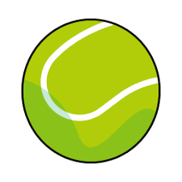
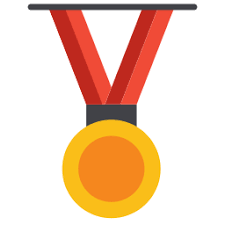

Mundo do Tênis
por Eduardo
O tênis é um esporte mundialmente popular que combina técnica, estratégia e condicionamento físico. Ele pode ser praticado em quadras de saibro, grama ou piso duro, cada uma influenciando no estilo de jogo.
Grandes torneios como os quatro Grand Slams reúnem os melhores jogadores do mundo, criando partidas memoráveis e momentos históricos.

Ranking de Jogadores
-
 Novak Djokovic
Novak Djokovic
-  Rafael Nadal
- Roger Federer
- Carlos Alcaraz
-  Iga Świątek
Principais Torneios
| Torneio | País | Quadra | Mês |
|---|---|---|---|
| Australian Open | Austrália | Piso duro | Janeiro |
| Roland Garros | França | Saibro | Maio |
| Wimbledon | Reino Unido | Grama | Julho |
| US Open | Estados Unidos | Piso duro | Agosto |